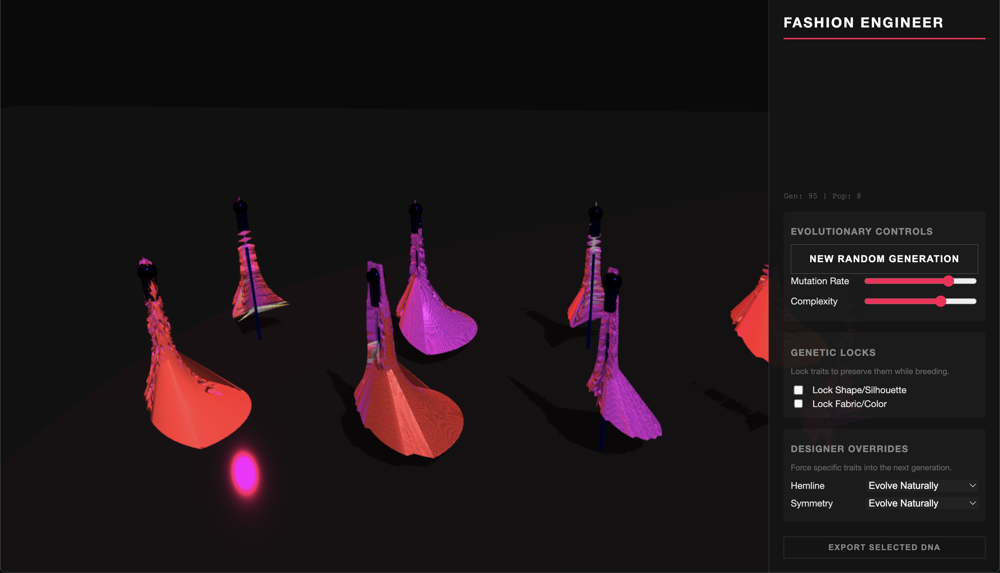

Interactive Evolutionary Platforms
Exploring art through open-ended evolution and human-guided selection. What emerges when
we combine neural networks, genetic algorithms, and aesthetic judgment?
SynthBreeder
An interactive evolution platform for generating sounds using NEAT.
Unlike traditional synthesizers with fixed parameters, SynthBreeder explores an open-ended
space of possible sounds through evolutionary computation.

Users select sounds they find interesting from each generation, and the system breeds
increasingly complex variations. The underlying NN start simple and complexifies
over time, discovering sonic textures that would be impossible to design manually. Each
network topology is unique, encoding audio waveforms through compositions of mathematical
activation functions.
→ Try SynthBreeder
AblOEh
"AblOEh" is an open-ended, 3D, evolutionary fashion design platform that generates dresses through a combination
of explicitly encoded trait-based genetics (hemline, silhouette, waist width) and neural networks
that control color, texture, and surface detail. Click on any design to breed the next
generation from its DNA.

The system demonstrates how explicit designer controls can coexist with emergent complexity.
Users can lock certain traits (shape, pattern) while allowing others to evolve, or apply
designer overrides (force asymmetric hemlines, strict symmetry) to guide evolution toward
specific aesthetic directions. The result is a hybrid approach where human creativity
and algorithmic exploration work in tandem.
Each dress is a phenotype expressed from a genotype containing both parametric traits
and a CPPN that evaluates color and displacement at every vertex. The evolutionary
process mirrors biological systems: mutations introduce variation, selection pressure
comes from human aesthetic judgment, and complexity grows organically over generations.
→ Try AblOEh
Open-Endedness
These platforms explore a fundamental question in artificial intelligence and creativity:
how do we build systems that can discover genuinely novel solutions rather than optimizing
toward predefined goals? Traditional optimization converges upon a target solution;
open-endedness, by design, creates infinites solution that are both novel and learnable/interesting.
By placing humans in the selection loop, we create a co-creative process where the
algorithm explores possibility space and humans provide the fitness function through
their choices. What emerges is often surprising. Solutions that are neither purely human-designed
nor purely algorithmic, but a synthesis that neither could achieve alone.
Additionally, the system seems to act as a mirror; it reveals the humans taste in surprising ways.